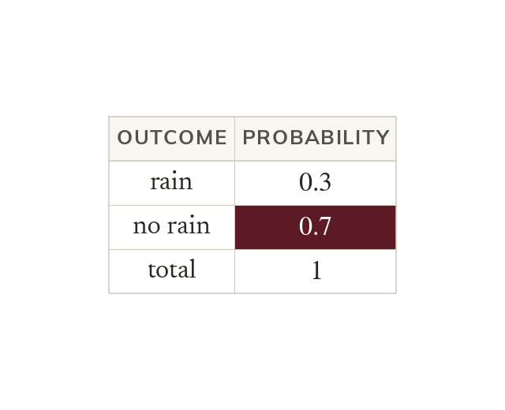
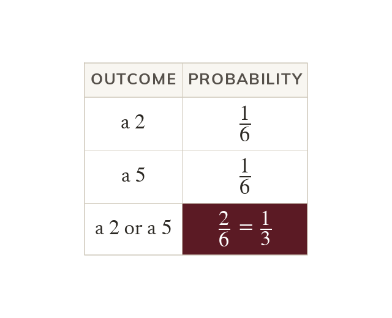
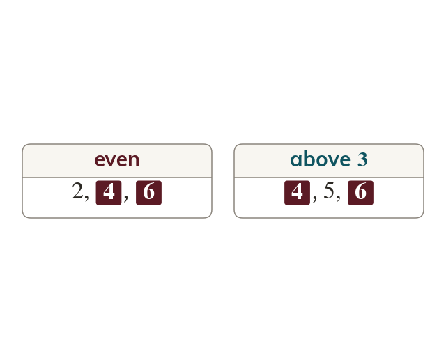

Everything adds to
The probabilities of all the possible outcomes add up to
So the probability that does not happen is
If there is a chance of rain, what is the chance of no rain? Today you use the fact that all the probabilities add up to and add the probabilities of events that cannot happen together.
Work down the page at your own pace. Write every answer in your book first, then click to check it.
Read each card, then follow the worked examples one step at a time.

The probabilities of all the possible outcomes add up to
So the probability that does not happen is
Take a fraction or decimal complement from
Take a percentage complement from If then P(not
Pick an answer. If it's wrong, the feedback tells you which mistake it was.
Read each card, then follow the worked examples one step at a time.

Mutually exclusive events cannot happen at the same time. Add their probabilities to find P(one or the other).

Events that can happen together are not mutually exclusive. Their probabilities cannot simply be added. Both and are even and above
Pick an answer. If it's wrong, the feedback tells you which mistake it was.
Finished? Next lesson: 7.17.3 Expected and Experimental Probability.
Log in, then search for a code to practise that skill.
Videos, worksheets and more on each part of this lesson.